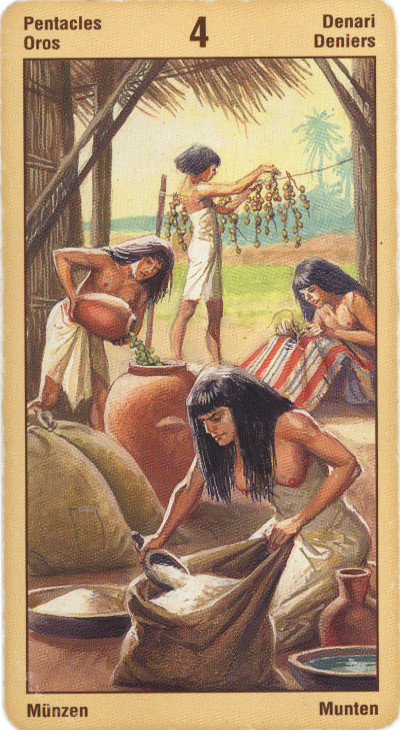

Четвёрка Пентаклей
Прямое положение: гарантия материальной прибыли; дары, наследие, наследство.
Четверка пентаклей надежна, здесь нет места случайности. Достигнутый успех здесь закономерен и является следствием кропотливого труда.
Это безопасность, надежность, порядок в доме, финансовая стабильность,
здоровье. Сила, характер. Надежный партнер. Человек, достигающий успеха.
Вместе с тем четверка пентаклей иногда может означать и жадность. "Я заработал это тяжелым трудом и не собираюсь ни с кем делиться".
Карта обладания имуществом или деньгами. Причем имущества лично заработанного или полученного в наследство. Подарки. Удовлетворенность жизнью, своим статусом. Стабильное положение в работе. Почивание на лаврах. Мещанство.
Человека описывает как достигшего того,что он хотел и не видящего смысла в "лишних"усилиях. Он всем доволен- работой, зарплатой... И не хочет идти дальше.
В перевернутом положении дело практически безнадежное: и человека не переубедишь, и кредита нигде не дадут.
Это денежные потери, беспорядок в делах, прекращение постоянного дохода, подвешенное состояние, расточительность.